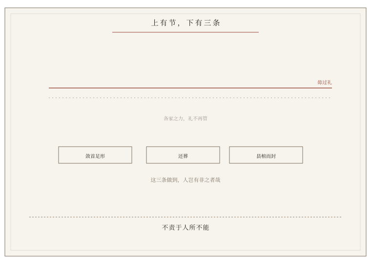

檀弓上 · 三·八十八 · 第 291 课
子游問喪具。夫子曰：「稱家之有亡。」子游曰：「有無惡乎齊？」夫子曰：「有，毋過禮。苟亡矣，斂首足形，還葬，縣棺而封，人豈有非之者哉？」
说什么事：子游问丧事所需器物该怎么办。夫子说：按家里的有无来办。子游说：家有无不同，从何处取齐？夫子说：家有，就不要超过礼；若真没有，只要衣衾盖住首足形体、敛完就葬、手悬棺而下，谁会非议他呢。
落在哪一层：礼之量与限。论「不责于人所不能」。
为何编在此位：上节论衣以场合，此节论器以家计。一论其质，一论其量，同此一批之「礼不苛人」。
【经】子游問喪具。夫子曰：「稱家之有亡。」子游曰：「有無惡乎齊？」夫子曰：「有，毋過禮。苟亡矣，斂首足形，還葬，縣棺而封，人豈有非之者哉？」
【注】稱，猶隨也。惡乎齊，問豐省之比。毋過禮。還之言便也，言已斂即葬，不待三月。縣棺而封，不設碑繂，不備禮。封當為窆，窆，下棺也。《春秋傳》作「塴」。不責於人所不能。
【疏】此一节论问送终所须当办具也。「称」犹随也，「亡」无也，言各随其家计丰薄有无也。「恶乎」犹于何也，子游言若必随家之有无，贫富于何可齐，故疑而问之。「有，毋过礼」，此答富家也：「毋」犹不也，礼有节限，设若家富，有正礼可依，而不得过礼。「苟亡矣，敛首足形」，此答贫家也：家无财也，但使衣衾敛于首足，形体不令露见而已。「还葬」，便也，若贫者敛竟便葬，不须停殡待其月数足也。「县棺而封」，封即窆，窆，下棺内圹中也；贵者则用碑繂，若贫而即葬者，但手县棺而下之，同于庶人，不待碑繂。案《左传》昭十二年「郑简公卒，将为葬除，司墓之室有当道者，毁之则朝而塴，弗毁则日中而塴」，杜注「塴，下棺也」。
丧具 送终所需之器物。参 273 节注「丧具，棺衣之属」。
称家之有亡 按家里的有与无来办。称，随；亡，无。
恶乎齐 从哪里取齐。恶乎，于何。齐，齐一、划一。
毋过礼 不要超过礼的规定。
敛首足形 衣衾裹住头、足与身体，不使形体露出。
还葬 敛完即葬。还，便。不待三月之期。
县棺而封 悬着棺木下入圹中。封当作窆，下棺。不设碑、繂（下棺之具）。
碑繂 碑是引棺之木，繂是引棺之绳。贵者用之。
子游问丧事该备些什么。夫子说：「按家里的有无来办。」子游说：「家有无不同，从哪里取齐呢？」夫子说：「家有，就不要超过礼；若真没有，只要衣衾把头和脚裹住、形体不露，敛完就葬，悬着棺下土，谁会非议他呢。」
此节是《檀弓》论丧具最正面的一处，一问两答，把礼的量与限讲全了。
夫子第一答只有一个字的精神：「称」——随。随家计之丰薄，不以一标准量天下。
子游追问得很实：若都随家有无，贫富便无从取齐；礼总要有个共同的尺。这个问题问得极好，因为它正是「称家」这条原则的漏洞。
夫子第二答把尺交出来，却是两把。富家之尺是「毋过礼」：礼有节限，有正礼可依，你可以办得好，但不能超过。贫家之尺是「敛首足形、还葬、县棺而封」：只要三件事做到——形体不露、敛完即葬、手悬棺下土——就没有人非议。
注末五字压住全篇：「不责于人所不能。」
第一层 「称」这个字的分量 礼的标准若定成「应当如何」，穷人就永远失礼。夫子把标准定成「按你的有无」，于是标准随人而移。这不是降低标准，是换一种标准：从「办到什么规格」换成「是否尽你所能」。
第二层 富家的限与贫家的底 两把尺一上一下。上尺是「毋过礼」——富而厚葬，是越礼，不是尽孝。下尺是三条底线——贫而能守此三条，即不算失礼。中间那一大片，礼不再管。礼在这里显示了一种罕见的克制：它只管上限与下限，把中间交给各家的力。
第三层 三条底线为何是这三条 「敛首足形」，关乎尊严：不能让亲人的身体露着。「还葬」，关乎不忍久停：贫家停殡三月无力，不如速葬，速葬不是不孝，是不敢久暴露。「县棺而封」，关乎不假借：没有碑繂就不装，手悬而下，同于庶人。三条都是「承认没有」，而不是「装作有」。
第四层 「人岂有非之者哉」的反问 这一问是全节的温度所在。夫子不说「礼许之」，说「谁会非议他」。礼在这里从条文变成了一种舆论的保证：你放心办，没人会笑你。
与今日何干 今人办丧，最重的压力常常不是礼，是比较：别人家办了多少桌、用了什么车。此节把比较废掉了：上不许过礼，下只要三条。中间那一段，由各家的力，不由各家的脸。
| 左 | 右 |
|---|---|
| 称家之有亡 | 量随其力 |
| 有无恶乎齐 | 子游之疑 |
| 有，毋过礼 | 富家之限 |
| 苟亡矣 | 贫家之底 |
| 敛首足形 | 形体不露 |
| 还葬 | 敛竟即葬 |
| 县棺而封 | 不设碑繂 |
| 人岂有非之者哉 | 舆论的保证 |
| 不责于人所不能 | 注末五字 |
画两处并置的葬所，视点平。左侧一处：宽大的圹穴，旁立着碑与引棺的绳具，穴边堆着整齐的明器（成排的陶器）；但穴上只覆着一层薄土，未加封树。右侧一处：简朴的小圹，无碑无绳，穴边空无一物，穴旁地上放着一束麻绳与一具素棺（薄木、未漆）。两处之间隔着一段土路。不写文字、不画人面细节。赭色只用在左侧穴边那排明器中的第一件，与右侧那束麻绳的绳结。
